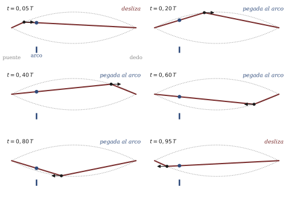
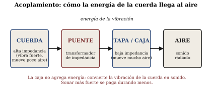
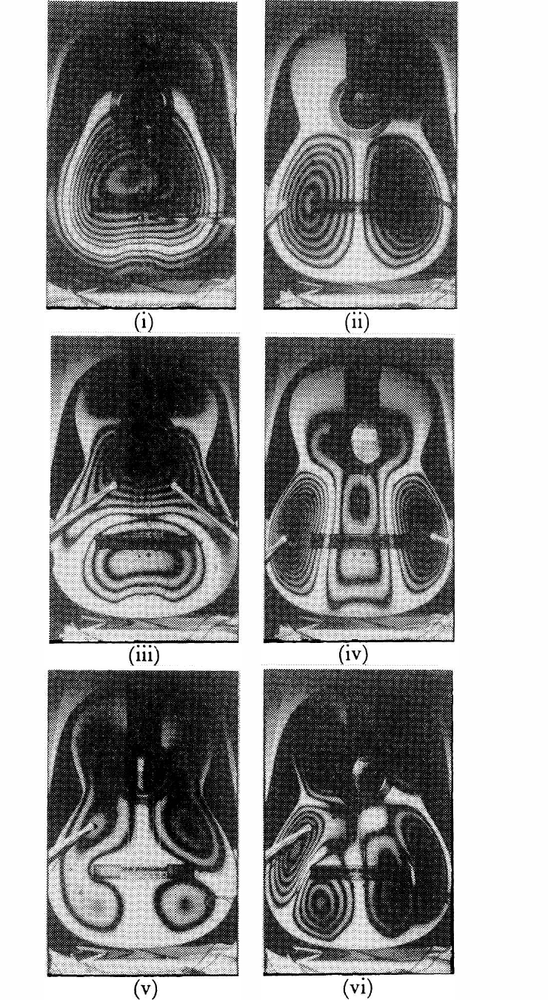

Cuerdas frotadas y el cuerpo del instrumento
Sesión 11 · Curso Acústica Musical UC Objetivos que cubre: OA1.3 (mecanismo de excitación frotada; régimen de oscilación), OA1.1 (modos del cuerpo y radiación), OA1.2 (punto de frotado, tapado y apoyo: predicciones contrastadas con el instrumento real).
¿Por qué el arco no chirría (cuando el violinista sabe lo que hace)?
La sesión 10 dejó una pregunta incómoda en el ticket de salida: un golpe entrega energía una vez y el sonido decae; el arco entrega energía todo el tiempo — ¿por qué entonces una cuerda frotada no suena como un chirrido continuo, sino como una nota estable y afinada?
La respuesta empieza por admitir que el arco, en el fondo, sí chirría. Frotar dos superficies produce siempre el mismo fenómeno a tirones que usted conoce de las puertas viejas, los frenos de una bicicleta y el dedo mojado en el borde de la copa (que frotamos en s10): las superficies se agarran, se deforman acumulando tensión, y cuando la fuerza acumulada supera lo que el agarre resiste, se sueltan y deslizan hasta volver a agarrarse. La física distingue dos fricciones: la de agarre (estática), más fuerte, y la de deslizamiento (cinética), más débil. Esa asimetría es la que produce el ciclo pegar-soltar — en inglés, stick-slip — y la resina que los cuerdistas pasan por el arco existe precisamente para exagerarla: agarre feroz, deslizamiento fácil.
En la puerta que chirría, ese ciclo se repite a un ritmo desordenado que depende de la presión, de la velocidad, de la humedad — por eso el chirrido es un ruido. La pregunta correcta no es por qué el arco chirría, sino por qué el chirrido de la cuerda sale ordenado.
La cuerda pone el metrónomo
Lo que distingue a la cuerda de la puerta es que la cuerda es un resonador afinado — el sistema con “opinión propia” de s10 —, y en cada soltar la cuerda no se queda quieta: la sacudida viaja por ella, se refleja en los extremos y vuelve al punto de contacto un tiempo después, un tiempo fijado por la longitud y la tensión de la cuerda, no por el arco. Y esa sacudida que vuelve es la que arranca la cuerda del agarre: dispara el siguiente soltar.
El resultado es que la fricción deja de mandar sobre su propio ritmo. El ciclo pegar-soltar queda esclavizado al viaje de ida y vuelta de la onda por la cuerda, es decir, al período propio de la cuerda: la misma f_1 que la cuerda tendría pulsada. Benade (1990, cap. 23, secs. 23.1–23.2) llama a esta situación régimen de oscilación: la fuente de energía (la fricción) es tonta y desordenada, pero el resonador le impone su calendario. La nota estable de un violín es un chirrido con metrónomo — y el metrónomo es la cuerda.
Esta es la idea que organiza todo el bloque C del curso: una oscilación auto-sostenida necesita una fuente continua de energía (el brazo que empuja el arco), una válvula que la entregue en porciones (la fricción que pega y suelta) y un resonador que gobierne a la válvula (la cuerda). En s12 cambiaremos la válvula — no habrá nada que pegue ni suelte — y el esquema seguirá funcionando.
De aquí salen dos consecuencias inmediatas que la sesión puso a prueba. Primero: apretar más el arco no sube la nota — la afinación es de la cuerda; la presión y la velocidad del arco cambian el timbre y, si se salen del rango donde el régimen se sostiene, rompen la nota en graznido (presión excesiva, arco lento) o la adelgazan a un silbido superficial (arco veloz y liviano): las tres versiones que la escucha del día mostró con la misma cuerda. Segundo: como la fricción repone energía en cada ciclo, el espectro rico no decae: la frotada sostiene lo que la pulsada (s04) solo tiene un instante después del ataque. Por eso el violín puede hacer crescendo en una nota larga y la guitarra no.
La esquina invisible
¿Y qué forma tiene la cuerda mientras hace todo esto? La intuición — y más de una ilustración — dibuja una curva suave que ondula. La realidad, descubierta por Helmholtz en la década de 1860 mirando la cuerda con un microscopio estroboscópico, es más extraña y más elegante: en cada instante la cuerda son dos segmentos rectos unidos en una esquina, y esa esquina viaja, recorriendo el óvalo que el ojo ve borroso, una vuelta completa por cada período de la nota (BEN 23.4; C&G cap. 6, pp. 203–232). El ojo no la ve porque a cientos de vueltas por segundo solo queda la envolvente; la cámara lenta del taller — si la del celular alcanza a resolverla [POR VERIFICAR] — o el video de respaldo la muestran (candidatos verificados jul-2026: “Helmholtz Motion of a Violin G-String — 18.750 fps High-Speed Visualization”, canal peteroshkai, https://www.youtube.com/shorts/WcRbQmNNeRw; y “Bowed violin string in slow motion”, canal ViolinB0W, https://www.youtube.com/watch?v=6JeyiM0YNo4). La figura 1 congela seis instantes de una vuelta.

El movimiento de Helmholtz une las dos mitades de la historia. En el punto donde el arco toca la cuerda, el paso de la esquina es exactamente el evento que dispara el soltar: mientras la esquina viaja, la cuerda va pegada al arco, moviéndose lenta con él; cuando la esquina pasa, la cuerda se suelta y desliza rápido en contra, hasta que la esquina completa la vuelta y el agarre la recaptura. Una vuelta de la esquina = un soltar: el dibujo de la demo y el ciclo de fricción son el mismo reloj visto desde dos lados.
Recuadro opcional (para quienes quieren el detalle). Si el arco frota a una fracción \beta de la longitud de la cuerda medida desde el puente (por ejemplo \beta = 1/10), el punto frotado pasa pegado al arco una fracción 1-\beta del período y desliza solo la fracción \beta restante: deslizamientos breves y veloces, agarres largos y lentos, con desplazamiento neto cero en cada ciclo. Roederer (1997, Ap. I) desarrolla el mecanismo de frotamiento en forma cuantitativa; Benade (1990, sec. 23.4) discute además los refinamientos que Raman agregó al modelo de Helmholtz a comienzos del siglo XX (deslizamientos múltiples, efecto de la presión del arco).

La esquina también explica el espectro (figura 2, panel inferior). Cada vez que pasa por el puente, la fuerza que la cuerda ejerce sobre él cae bruscamente y vuelve a crecer: una onda de diente de sierra, con la serie armónica completa y amplitudes que decrecen suavemente con el número del parcial (BEN 23.5). Ese es el sonido “en bruto” que la cuerda entrega al instrumento — la demo de la sesión lo sintetiza tal cual — y es la materia prima que el punto de frotado esculpe: frotar cerca del puente (sul ponticello) afila la esquina y carga los parciales agudos (a cambio exige más presión para que el régimen no se rompa); frotar sobre el diapasón (sul tasto) la redondea y da el timbre aflautado. En el taller lo midieron: los espectrogramas cambiaron de reparto de energía entre las tres posiciones, pero f_1 no se movió — la firma del régimen.
La cuerda no mueve el aire: la cadena completa
Nada de lo anterior se oiría sin el resto del instrumento. Una cuerda de un milímetro de espesor es, para el aire, casi invisible: al avanzar, el aire la rodea en vez de comprimirse — el elástico de s10 pulsado en el aire casi no sonaba por lo mismo. En el lenguaje de s10: la impedancia de la cuerda y la del aire están groseramente desparejadas, y sin transformador no hay traspaso.
El transformador es la cadena cuerda → puente → tapa → aire. El puente es el peaje obligado: toda la energía que la cuerda exporta pasa por él como la fuerza de diente de sierra recién descrita (por eso la pinza de ropa del gancho, al agregarle masa, apagó los parciales agudos sin tocar la afinación: un transformador con preferencias, no un cable). La tapa y el fondo, movidos por el puente, sí tienen superficie para empujar aire — pero no vibran enteros como un pistón: vibran por modos, con líneas nodales y zonas en contrafase, exactamente como la sartén de s03. Campbell & Greated (cap. 6, pp. 203–232) muestran esos modos medidos uno a uno — interferogramas holográficos en la tapa de una guitarra (figura 4) y patrones de Chladni en placas de violín —: el cuerpo del instrumento es un juego de resonancias fijas que refuerza unos parciales y desatiende otros — un ecualizador de madera que le pone su firma a todo lo que la cuerda mande. Y el aire encerrado en la caja aporta su propia resonancia, que respira por las efes y ayuda a radiar los graves que una tapa de ese tamaño no podría empujar sola: la botella de s10 vive dentro del violín.


Dos detalles cierran la cadena. La radiación es direccional: los graves salen parejos en todas direcciones, pero los parciales agudos salen en haces que dependen del modo que los radia — por eso el instrumento cambia de brillo cuando usted camina a su alrededor (cualitativo; C&G cap. 6; BEN 24.2). Y el acoplamiento puede pasarse de la raya: cuando un modo del cuerpo es tan fuerte que le disputa la energía a la cuerda en su propia frecuencia, el régimen tartamudea y la nota “aúlla” a tirones — la famosa nota lobo de cellos y violines (BEN 25.4), que en el curso queda como curiosidad, no como materia de prueba.
Ajustar ese ecualizador de madera — grosores, arqueados, posición del alma — es el oficio del lutier (BEN 24.4 relata el método de afinación de placas de C. Hutchins). Ese oficio, en versión tubo y taladro, es exactamente lo que haremos en s12.
Síntesis
- La fricción es una válvula: agarra fuerte, desliza débil. Sola, chirría sin orden; acoplada a una cuerda, el reflejo que vuelve dispara cada soltar y el ciclo queda esclavizado a la f_1 de la cuerda: régimen de oscilación.
- La cuerda frotada vibra como dos rectas y una esquina que viaja (Helmholtz): una vuelta de la esquina = un soltar. La fuerza sobre el puente es un diente de sierra: serie armónica completa, sostenida porque la fricción repone energía en cada ciclo.
- El punto y la presión del arco esculpen el espectro; la afinación no se mueve. Ponticello: más agudos y más riesgo de graznido; tasto: timbre aflautado.
- La cuerda casi no mueve aire: la cadena cuerda→puente→tapa→aire hace el trabajo. El cuerpo vibra por modos y actúa de ecualizador fijo; las efes radian los graves con el aire encerrado; los agudos salen en haces direccionales.
Hacia la sesión 12
Su ticket de salida quedó apuntando al vacío exacto que s12 llena: en la cuerda, el pegar-soltar lo hace la fricción — en una flauta no hay nada que pegue ni suelte, y sin embargo hay nota estable. ¿Qué hace de válvula? La sesión 12 es taller completo de lutería: construiremos y mediremos tubos y flautas (los materiales los pone el curso), y la serie del objeto termina ahí — lleve su bitácora al día con los dos compromisos pendientes (mapa de resonancias de s10 y protocolo de acoplamiento de esta semana).
Referencias y lectura complementaria
- Benade, A. H. (1990). Fundamentals of Musical Acoustics, 2.ª ed. Dover — cap. 23 (“The Oscillations of a Bowed String”), secs. 23.1–23.5: la fuente principal de esta sesión; cap. 24, secs. 24.1–24.2 y 24.4 (cuerpo, puente y ajuste de placas); sec. 25.4 (la nota lobo, curiosidad).
- Campbell, M. & Greated, C. (1987). The Musician’s Guide to Acoustics. Oxford UP — cap. 6, pp. 203–232 (el violín: arco, cuerpo, movimiento de Helmholtz y las holografías de modos proyectadas en clase).
- Roederer, J. G. (1997). Acústica y Psicoacústica de la Música. Ricordi — Apéndice I (mecanismo de frotamiento, tratamiento cuantitativo opcional; en español).
- Rossing, T. D., Moore, F. R. & Wheeler, P. A. (2002). The Science of Sound, 3.ª ed. — cap. 10, secs. 10.1–10.9 (cuerdas frotadas, cuerpo, puente), para quien quiera ejercicios.